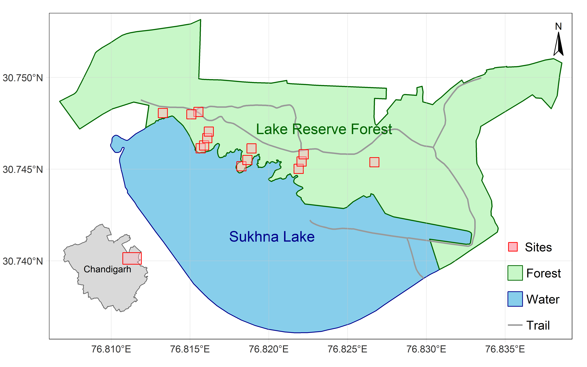
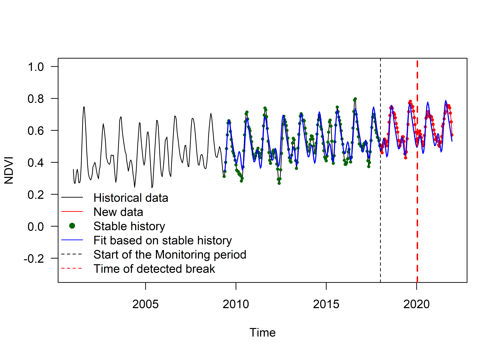
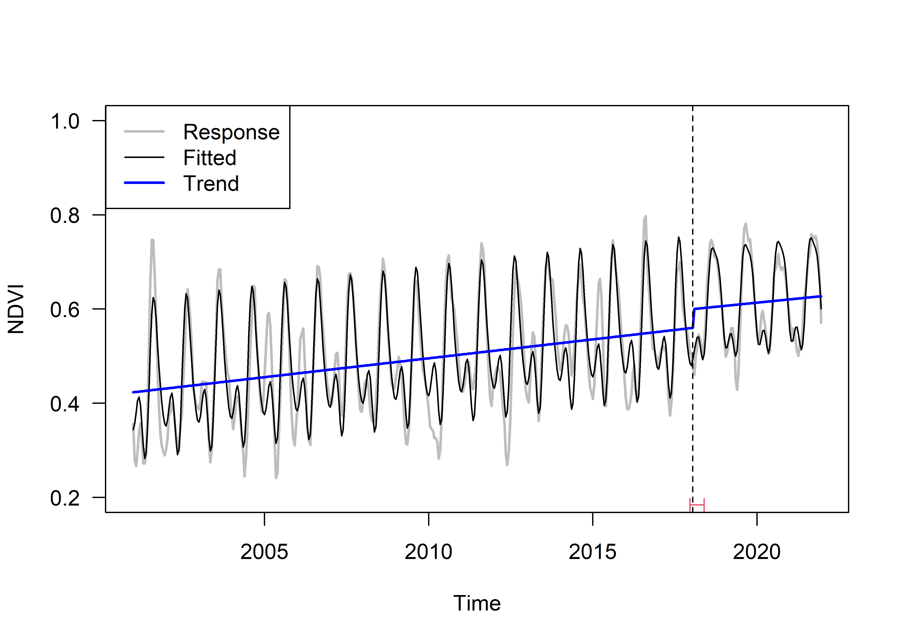
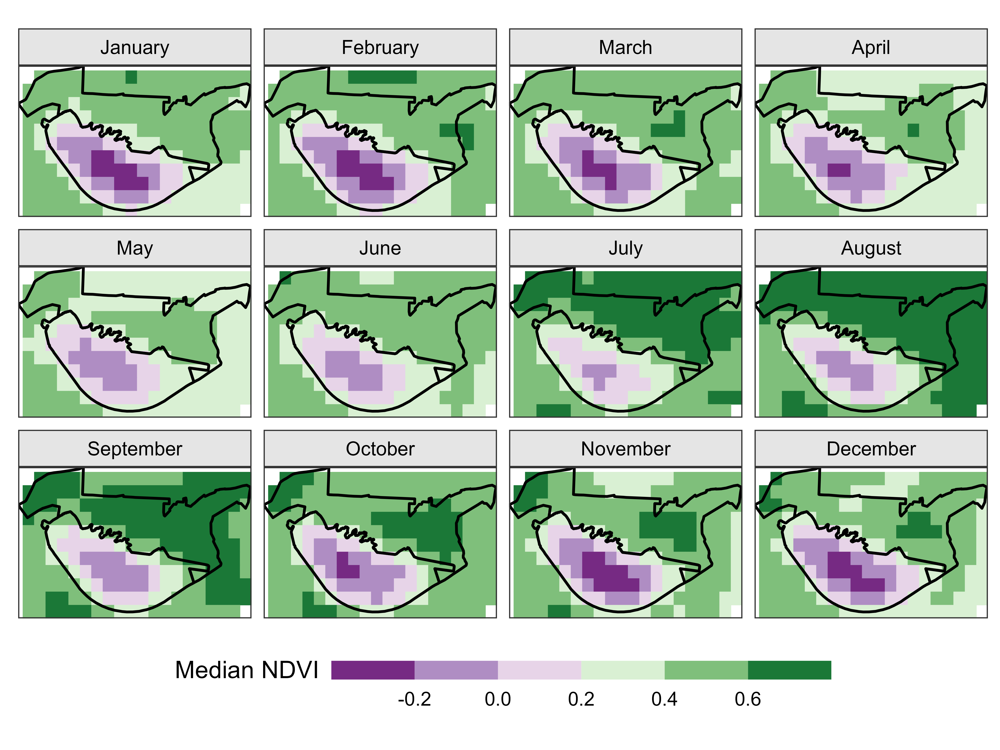
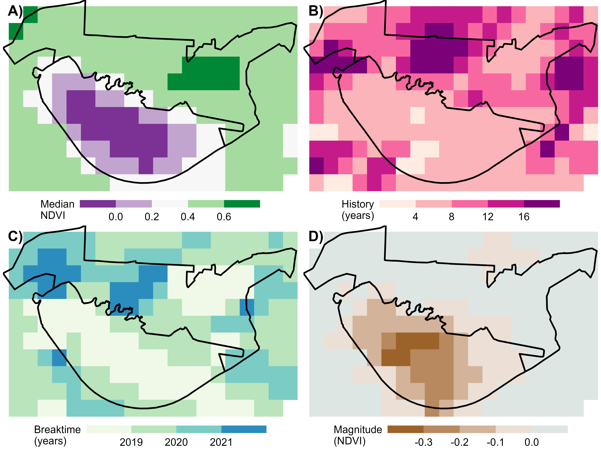
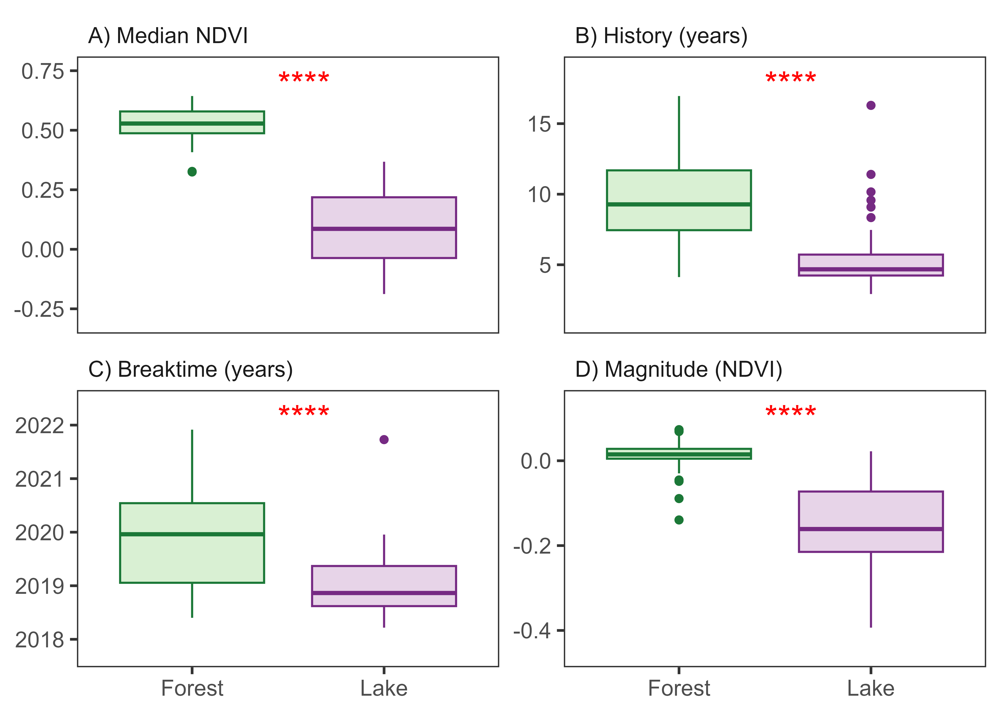
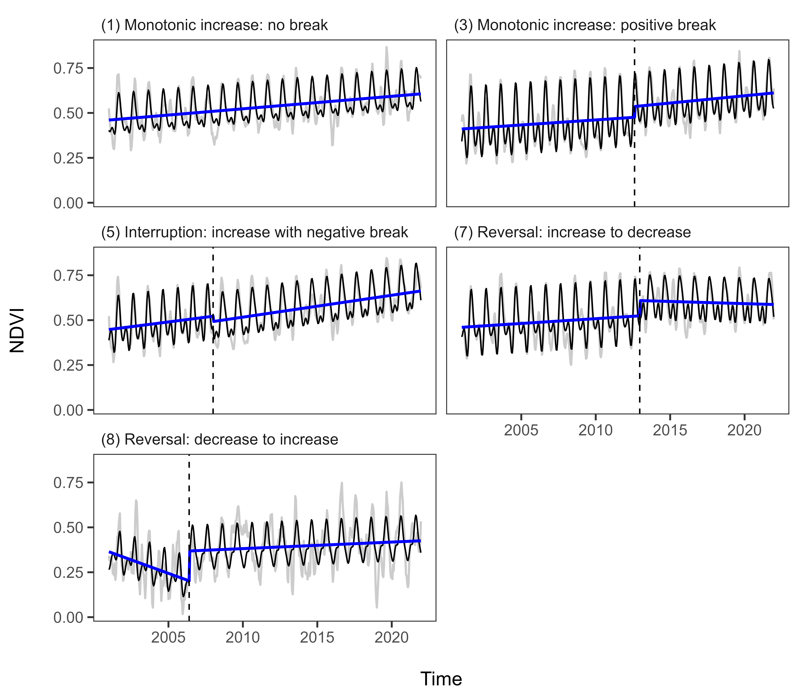
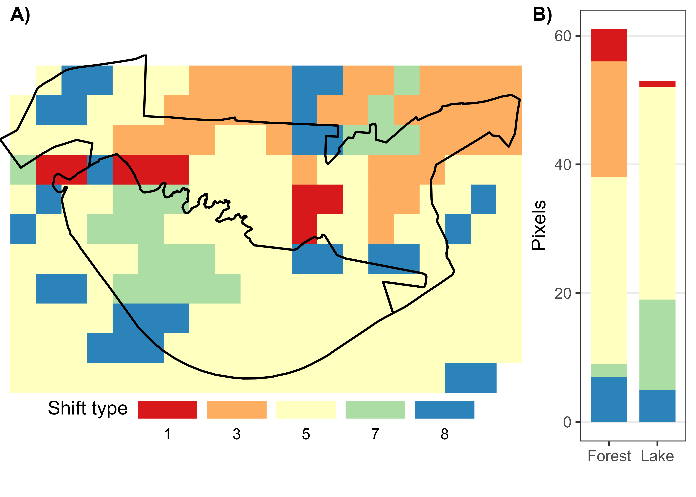
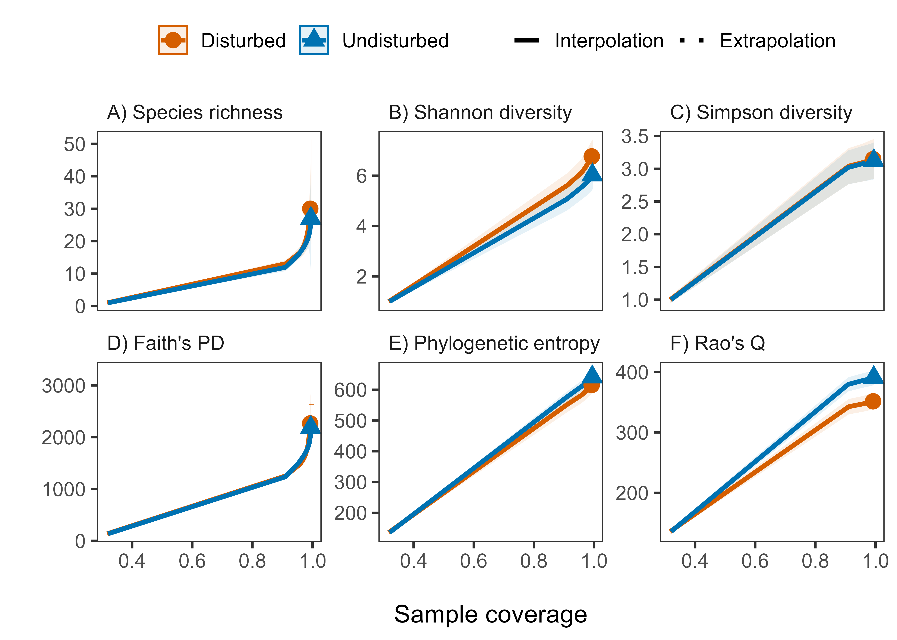
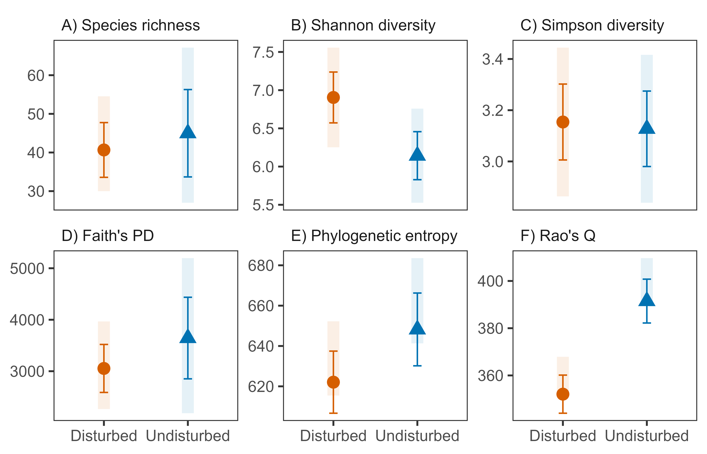

![]()
| Diversity | Observed | Estimated | 95% CI | |||
|---|---|---|---|---|---|---|
| D | U | D | U | D | U | |
| Species richness | 30 | 27 | 40.66 ± 7.08 | 44.98 ± 11.3 | [30, 54.54] | [27, 67.14] |
| Shannon diversity | 6.77 | 6.03 | 6.9 ± 0.33 | 6.14 ± 0.31 | [6.25, 7.56] | [5.53, 6.76] |
| Simpson diversity | 3.15 | 3.12 | 3.15 ± 0.15 | 3.13 ± 0.15 | [2.86, 3.44] | [2.84, 3.42] |
| Faith's PD | 2265.69 | 2184.26 | 3053.96 ± 466.17 | 3644.34 ± 792.19 | [2265.69, 3967.63] | [2184.26, 5197.01] |
| Phylogenetic entropy | 615.44 | 641.3 | 622.07 ± 15.39 | 648.22 ± 18.04 | [615.44, 652.24] | [641.3, 683.57] |
| Rao's Q | 351.54 | 390.81 | 352.08 ± 8.07 | 391.49 ± 9.28 | [351.54, 367.89] | [390.81, 409.68] |
Disturbance and vegetation structure in an urban forest of Indian Siwaliks
Disturbance
Remote Sensing
Taxonomic Diversity
Phylogenetic Diversity
Journal Article
We compared the soil restoration potential of exotic and native plant species on coal mine. Our results suggested that native species are more beneficial for soil restoration than the exotic species.
Abstract
Urban forests are facing multiple human-mediated pressures leading to compromised ecosystem structure and functioning. Therefore, understanding ecosystem structure in response to ongoing pressures is crucial for sustaining ecological integrity and human well-being. We aim to assess the disturbance and its effects on vegetation structure of urban forest in Chandigarh using a combination of remote sensing techniques and vegetation survey. The disturbance was assessed as change in NDVI (Normalised Difference Vegetation Index) from 2001 to 2021 by applying the BFAST (Breaks For Additive Season and Trend) algorithm to the MODIS satellite imagery data. A vegetation survey was conducted to compare the species composition, taxonomic and phylogenetic diversity as measures of vegetation structure. While signals of disturbance were evident, the changes in vegetation structure were not well established from our study. Further, vegetation analysis indicated no significant differences in vegetation composition due to disturbance (F1,12 = 0.91, p = 0.575). However, the phylogenetic diversity was substantially lower for disturbed plots as compare to undisturbed plots, though the taxonomic diversity was similar among the disturbed and undisturbed plots. Our results suggests that the effects of disturbance are more prominent on phylogenetic diversity than the taxonomic diversity. These findings can be considered as early signals of disturbance and its effects on vegetation structure of urban forest and contribute to the knowledge base on urban ecology. Our study has implications for facilitating evidence-based decision-making and the development of sustainable management strategies for urban forest ecosystems in Chandigarh.
Introduction
Urban forests are vital components of modern cities, providing numerous environmental, social, and economic benefits. These forests influence the well-being of city dwellers through multiple ecosystem services including climate regulation (Gupta, Mathew, and Khandelwal 2019), run-off regulation, water supply, air purification and habitat provisions (Berglihn and Gómez-Baggethun 2021; Escobedo, Kroeger, and Wagner 2011). The quality of ecosystem services ultimately depend on the biological diversity specifically the vegetation composition (Elmqvist et al. 2013). Like any other ecosystem, urban forests are subjected to various man-made or natural disturbances that can substantially compromise the ecosystem services through their direct and indirect effects on vegetation composition (Pickett et al. 2011). Any natural or anthropogenic factor which causes substantial change in some measurable ecosystem state variable is referred as ‘disturbance’ (Jentsch and White 2019; Wohlgemuth, Jentsch, and Seidl 2022). Thus, disturbances in urban forests can arise from both natural and human-induced factors. Natural disturbances include severe weather events such as storms, drought or flooding, insect outbreaks and diseases. Human-induced disturbances encompass activities such as urbanisation, infrastructure development, pollution, logging, fertilisation, use of pesticides and improper management practices (Wohlgemuth, Jentsch, and Seidl 2022).
Disturbance events can lead to changes in vegetation composition and species diversity of urban forests through multiple mechanisms (Łaska 2001). Disturbance can regulate the vegetation composition of ecological communities through assembly rules via disturbance filters. In this context, the intermediate disturbance hypothesis states that biodiversity peaks at intermediate levels of disturbance because species adapted to both higher and lower disturbance intensity can coexist at intermediate levels of disturbance (Connell 1978). However, the effects of disturbance on species diversity may depend on productivity because productivity and disturbance are negatively related to competition (Huston 1994). Alternatively, the mass-ratio hypothesis states that the dominant species regulates the species diversity through its effects on productivity (Grime 1998). Further, disturbances can initiate successional processes by creating gaps in the canopy or altering resource availability and therefore, leading to changes in species composition (Denslow 1980). Non-native invasive species can occupy and dominate these disturbed habitats leading to a decline in native species diversity (Aryal et al. 2022). Apart from direct disturbance agents, ongoing environmental changes together with expanding urban populations are also projected to indirectly impose severe pressure on structure and functioning of urban forests. Available literature indicates mixed support for either of these hypotheses (Kershaw and Mallik 2013). However, there is growing evidence that the disturbance can substantially alter the vegetation structure (Wohlgemuth, Jentsch, and Seidl 2022). The altered ecosystem structure of urban forests have substantial implications as it can affect the city residents through compromised ecosystem services. Therefore, monitoring and understanding the impacts of disturbance on urban forest structure are crucial for effective management, mitigation of risks, and conservation efforts.
The city Chandigarh is renowned for its meticulously planned urban landscape and abundant green spaces. Its urban forests, comprising parks, gardens, and extensive green belts, contribute significantly to the city’s ecological well-being and serve as important reservoirs of biodiversity. However, rapid population growth, human activities, and natural events pose potential threats to the vegetation structure of Chandigarh’s urban forests. Further, the lake catchment area also suffers from natural disturbance due to heavy soil erosion during rainy season (Y. Singh 2002). Ongoing environmental change is expected to increase the frequency of disturbance events by altering the seasonality and intensity of rainfall in the Siwalik region. Thus, the the urban forests of Chandigarh are susceptible to various disturbances that may threaten their integrity and ecological functions. Therefore, detecting and monitoring disturbances in urban forests is essential for the effective management and preservation of these valuable green areas. The objective of present study is to detect the disturbances in urban forests using remote sensing data. Further, this study aims to analyse the vegetation structure in terms of species diversity and vegetation composition in the disturbance affected areas. The ultimate goal is to provide decision-makers, urban planners, and forest management agencies with valuable information to mitigate risks, prioritise conservation efforts, and ensure the long-term sustainability of Chandigarh’s urban forests.
Methodology
Study site
The present study was conducted in the lake reserve forest of the Sukhna lake catchment area (Figure 1). Sukhna lake is a man made reservoir situated in union territory of Chandigarh at Siwalik foothills of lower Himalayas (Y. Singh 2001). The lake has been declared as a national protective wetland by government of India. The geographical area of Sukhna lake is about 3 km2 with an average elevation of 350 m above mean sea level (Figure 1). The lake reserve forest spreads over an area of 1.5 km2 lies northern side of the lake, harbour several grazers i.e. Sambhar, Asian antelope and several species of reptiles and birds. The vegetation is similar to Siwalik hills comprising of dry mixed deciduous forests with occasional bamboo brakes (Kumar et al. 2022). Climatic conditions are subtropical monsoon type with annual rainfall of 1110 mm, with maximum temperature of 44°C and minimum 37°C in summer and 14°C during winter as maximum and 3°C as minimum. Soils are alluvial, sandy loam highly susceptible to soil erosion by water run-off action (Y. Singh 2002).

Satellite data and pre-processing
Since the normalized difference vegetation index (NDVI) has been regarded as a good proxy for vegetation health and biomass, we selected NDVI to assess forest disturbance. The disturbance induced changes in biomass should be reflected as variations in NDVI values. We downloaded all available NDVI values from 2001 to 2021 from MOD13Q1 (version 061) data product using the R package MODISTools version 1.1.4 (Hufkens 2023).
The NDVI values of this product are are derived from atmospherically-corrected reflectance in the red, near infra-red, and blue wavebands from the Moderate Resolution Imaging Spectroradiometer (MODIS) instrument mounted on Terra satellite. This data product provides the NDVI values at a spatial resolution of 250 m generated for every 16 days as a Level 3 product (Didan 2021). The algorithm chooses the best available pixel value from all the acquisitions from the 16 day period based on clouds cover, view angle, and the reflectance value. We also downloaded the associated pixel reliability layer to control for pixel values quality. This layer contains simplified ranking of the data that describes overall pixel quality and the good quality data is represented by zero rank (Didan 2021).
We acquired a total of 483 images each for NDVI values and associated pixel reliability values. Clear observations with no sub pixel cloud, low aerosol, and low sensor view angle (<30 degrees) are considered as high quality observations. We selected only reliable good quality pixels by masking out the pixels with no data, marginal data, snow/ice or clouds (see Table 4 in Didan et al. 2015). This data processing step introduced gaps in our initial NDVI time series and about 6.7% of total pixels had missing values. The missing values were imputed using the na.interp() function from the forecast package version 8.21 (Hyndman and Khandakar 2008). This approach first calculates a robust STL-decomposition (Cleveland et al. 1990) followed by a linear interpolation of the seasonally adjusted data, and then, the seasonal component is added back. Next, we used the Savitzky-Golay filter (Savitzky and Golay 1964) for smoothing the NDVI time series. This filter was applied using the R package signal version 0.7.7 (Ligges et al. 2022). Thus, we created a processed NDVI time series for all pixels in the initial dataset.
Detection of disturbance
To assess the forest disturbance, we implemented the Breaks for Additive Seasonal Trends (BFAST) algorithm using the function bfastmonitor() function from R package bfast version 1.6.1 (Verbesselt et al. 2021; Verbesselt, Hyndman, Newnham, et al. 2010; Verbesselt, Hyndman, Zeileis, et al. 2010). Basically, this algorithm detects structural changes in both the trend and seasonal components of a STL-decomposed time series. We used the season-trend model to detect the changes in NDVI time series as described earlier (Verbesselt, Zeileis, and Herold 2012). This model assumes a linear trend and harmonic season for \(y_t\) observations at time \(t\).
\[y_t = \alpha_1 + \alpha_2~t + \sum_{j = 1}^k \gamma_j~ \sin \left( \frac{2 \pi j t} {f} + \delta_j \right) + \epsilon_t \tag{1}\]
where the intercept \(\alpha_1\), slope \(\alpha_2\) (i.e., trend), amplitudes \(\gamma_1 \ldots \gamma_k\), and phases \(\delta_1 \ldots \delta_k\) (season) are the unknown parameters, \(f\) is the known frequency (e.g., \(f\) = 23 annual observations for a 16-day time series), and \(\epsilon_t\) is the unobservable error term at time \(t\) (with standard deviation \(\sigma\)). To robustly detect disturbances, we used three harmonic terms (i.e., \(k\) = 3) to represent a four-month cycle of NDVI (Verbesselt, Zeileis, and Herold 2012). The unknown seasonal and trend parameters can be estimated and tested using ordinary least squares (OLS) method (Cryer and Chan 2008).
If there is no disturbance, then this season-trend model (Equation 1) should remain stable for newly added observations. In other words, a disturbance will be detected when the model will no longer remain stable. The stability of model can be estimated using the MOving SUM (MOSUM) test of the OLS residuals (\(\hat \epsilon_t\)) in the monitoring period \(t = n + 1, \ldots, N\)
\[MO_t = \frac{1}{\hat \sigma \sqrt{n}} \sum_{s = t - h + 1}^t \left(y_s - x_s^ \top \hat \beta \right) \tag{2}\]
where \(h\) is the bandwidth of the MOSUM and is typically chosen relative to the size of the history sample (e.g., \(h = n/4\)). The OLS-MOSUM test (Equation 2) and least squares are used to determine the number and position of the breakpoints in the seasonally adjusted data (\(Y_t-S_t\)). The breakpoints are declared if the absolute \(|MO_t|\) values fall beyond the 5% probability of structural model stability (Verbesselt, Zeileis, and Herold 2012). On the other hand, the \(|MO_t|\) should be close to zero with random fluctuations for a structurally stable model (Verbesselt, Zeileis, and Herold 2012).
Firstly, we detected changes at the end of NDVI time series using the function bfastmonitor() (Verbesselt, Zeileis, and Herold 2012). This approach first computes the trend, season and other covariates using the STL-decomposition. Then, the data is divided into history and monitoring period. We defined the January 2018 as the start period so that the history period is selected from 2001 to 2018 and monitoring period was defined as 2018 onwards for the present study. The stable history was selected based on a reversed-ordered-cumulative sum (CUSUM) of residuals, or ROC (Pesaran and Timmermann 2002). A season-trend model was fitted to this selected stable history period and then, the OLS-MOSUM test was used to detect changes in the monitoring period. If a breakpoint is detected, the timing and magnitude of breakpoint was estimated (Figure 2). We used the Wilcoxon’s rank sum test (also known as Mann-Whitney U test) to compare the disturbance parameters between forest and lake components. This test compares the difference in medians with relaxed assumption of normality of data. We used the rstatix package (version 0.7.2) to compute the test statistics and associated p-values (Kassambara 2022).

However, this monitoring approach aims to detect breaks at the end of NDVI time series. Further, it assumes a disturbance free stable history period, which often not a case with real data. Considering these limitations, we focused on a major trend shifts within the NDVI time series. We tested for a single large break using the function bfast01() (Jong et al. 2013). This approach also uses the similar season-trend model and the single breakpoint was estimated by minimising the segmented residual sum of squares. It identifies a single largest break (if MOSUM is significant) for duration 2001-2021 or no break (i.e., MOSUM is not significant). We used a minimum segment size of 69 observations (3 years) to appropriately estimate the regression parameters (2 trend and 6 season parameters) of the season-trend model (Figure 3). These identified breaks or turning points were then characterised using the function bfast01classify() and categorised into different types of ecological trend shifts as described earlier (Bernardino et al. 2020).

Field sampling
To study vegetation composition and species diversity, we pre-defined 14 locations along the lake catchment in the lake reserve forest (Figure 1). This prior selection of sampling plot allowed us to avoid any preferential or selection bias while sampling vegetation. We sampled plant species and their abundances using the quadrat method during the flowering season (August-September). We laid a 10 m \(\times\) 10 m quadrat at each selected location and recorded the abundance of all woody plants. Herbaceous species were sampled in three randomly laid 1 m \(\times\) 1 m quadrats within each 10 m \(\times\) 10 m quadrat. A total of 50 quadrats, 14 quadrats for trees and 36 quadrats for herbaceous species were sampled, since two 10 m \(\times\) 10 m quadrats had no herbaceous species. The geographic location of each plot was recorded with a handheld GPS (Garmin eTrex 10). Most of the plant species were identified in field and few unidentified plant specimens were collected and photographed for further identification. For identification of plant specimens, we consulted the Herbarium of Panjab University, Chandigarh (PAN) and on-line database eFlora of India (eFI 2022). All the botanical names and their authorities were standardised according to World Checklist of Vascular Plants (WCVP) data version 10 of 27 October 2022 (Govaerts et al. 2021) using the R package rWCVP version 1.2.4 (Brown et al. 2023). Further, all species were broadly categorised into native, introduced and invasive species following the ‘Plants of World Online’ (POWO 2023) and published alien flora of India (Khuroo et al. 2012).
Phylogenetic information
To analyse the phylogenetic relatedness among the species, we used the recently published GBOTB backbone of phylogeny for seed plants, which is based on data from GenBank and Open Tree of Life (Smith and Brown 2018). It is considered as the largest dated phylogeny for 79,881 taxa of seed plants resolved at species level. We used the package V.PhyloMaker2 (version 0.1.0) to prepare a phylogenetic tree for the selected plant species (Jin and Qian 2022). The phylogeny was generated from the GBOTB.extended.LCVP mega-tree, which is a combination of two published phylogenies for plants (Smith and Brown 2018; Zanne et al. 2014). Plant names in this phylogenetic tree are standardised according to the Leipzig Catalogue of Vascular Plants (LCVP) (Freiberg et al. 2020), which closely resemble to WCVP (Govaerts et al. 2021). The nodes were built using the nodes.info.1.LCVP function, which returns the most recent common ancestor of all the tips in the largest cluster of the genus, and define it as the basal node of the genus. Further, the phylogeny was generated under the Scenario 3 for binding of new genus tip to the family branch as defined in earlier study (Qian and Jin 2015).
Vegetation analysis
To assess the effects of disturbance, we divided the selected vegetation plots into disturbed and undisturbed plots based on the magnitude of NDVI change from bfastmonitor() output. If the magnitude of NDVI change was negative, the vegetation plots have been considered as disturbed plots (n = 8), whereas vegetation plots with a positive change in NDVI were considered as undisturbed plots (n = 6). Then, we compared the vegetation composition and species diversity in the disturbed and undisturbed plots. However, the efforts to measure and compare species diversity often suffer from sampling bias due undetected rare species. Therefore, equalising or standardisation of samples become necessary to measure and compare diversity in an unbiased manner. Traditionally, diversity samples have been standardised by equalising sampling effort, sample size and coverage. Equalising coverage is recommended because it considers both the sample diversity and true diversity (Roswell, Dushoff, and Winfree 2021). Therefore, to examine sampling completeness of plant species across vegetation plots, we performed coverage-based rarefaction and extrapolation using the R package iNEXT version 3.0.0 (Hsieh, Ma, and Chao 2016).
Traditional diversity metrics such as species richness (\(S\)) do not incorporate species abundances, and those include species abundances, the Shannon’s index (Shannon 1948) and the Simpson’s index (Simpson 1949), do not behave intuitively for subsequent addition or removal of species from a community (Chao et al. 2014; Roswell, Dushoff, and Winfree 2021). To overcome these issues, the use of Hill numbers are recommended (Roswell, Dushoff, and Winfree 2021). Hill numbers are a series of diversity measures that combines species richness and species abundances (Hill 1973). Hill number for order \(q\) can be defined as:
\[ ^qD = \left( \sum_{i = 1}^S p_i^q \right)^{1/(1-q)} \tag{3}\]
where \(p_i\) is the proportion or relative abundance of species \(i\), and \(S\) is the number of species so that \(\sum_{i = 1}^S p_i = 1\). If \(n_i\) is the total abundance of species \(i\), then the relative abundance can be calculated as \(p_i = n_i / \sum_{i = 1}^S n_i\). Many commonly used diversity measures are special cases of Hill numbers (Chao et al. 2014). When \(q = 0\), Equation 3 did not considers the relative abundance of species and get reduced to species richness \(S\) (Equation 4). Although Equation 3 becomes undefined for \(q = 1\), its limit as \(q\) tends to 1 represents the exponential of Shannon’s entropy (Equation 5). Similarly, when \(q = 2\), the Equation 3 represents the inverse of Simpson concentration (Equation 6). The logarithm of Hill numbers represent the corresponding Renyi entropies.
\[ ^0D = S \tag{4}\]
\[ \lim_{q \to 1} ~ {^qD} = {^1D} = \exp \left( - \sum_{i = 1}^S p_i \log p_i \right) \tag{5}\]
\[ ^2D = 1 \Big/ \sum_{i = 1}^S p_i^2 \tag{6}\]
Since the Hill number of order \(q = 1\) considers relative abundance of each species, \(^1D\) can be interpreted as a measure of the effective number of common species in the assemblage. Similarly, \(^2D\) can be interpreted as the effective number of dominant species because it weighs more on the abundant species (Chao et al. 2014). We compared the first three measures of Hill numbers, i.e., species richness (\(q = 0\)), Shannon diversity (\(q = 1\)) and Simpson diversity (\(q = 2\)) for disturbed and undisturbed plots using the R package iNEXT version 3.0.0 (Hsieh, Ma, and Chao 2016). We estimated these diversity measures as the mean and 95% confidence intervals of 100 bootstrap replicates for a standardised sample size of 2000 individuals using the iNEXT() function. We determined significance of difference by analysing the overlap of the 95% confidence intervals. Whenever the 95% confidence intervals did not overlap, we considered significant difference in species diversity at p < 0.05 (Colwell et al. 2012).
Similarly, we compared phylogenetic diversity (PD) among the disturbed and undisturbed plots. We used the phylogenetic diversity measures of order \(q\) based on the Hill number framework (Chao, Chiu, and Jost 2010). If \(L_i\) represents the length of branch \(i\) and \(a_i\) denotes the total relative abundance descended from the \(i\)th branch for a phylogenetic tree with \(B\) branch segments, the mean branch length (weighted by branch relative abundance) can be expressed as \(\bar T = \sum_{i = 1}^B L_i a_i\). Chao, Chiu, and Jost (2010) defined the phylogenetic diversity of order \(q\) as:
\[ ^q \text{PD} = \left[ \sum_{i = 1}^B L_i \left( \frac{a_i}{\bar T} \right)^q \right]^{1/(1-q)} \tag{7}\]
The Equation 7 becomes the Faith’s PD for \(q = 0\), which do not considers the actual total branch length and branch abundances. The measure \(^1 \text{PD}\) represents a monotonic transformation of the phylogenetic entropy \(H_P\), which weighs each branch proportional to its abundance. The measure \(^2 \text{PD}\) is a monotonic transformation of Rao’s quadratic entropy \(Q\), which puts more weight on abundant/dominant branches and discounts rare branches (Chao, Chiu, and Jost 2010; Hsieh and Chao 2017). The rarefaction and extrapolation methods were used to fairly compare these phylogenetic diversity measures across the plots (Chao et al. 2015; Hsieh and Chao 2017). We computed these metrics using the package iNextPD version 0.3.1 (Hsieh and Chao 2016).
Further, we used the Non-metric Multidimensional Scaling (NMDS) to find the similarities and patterns among the species assemblages. NMDS is considered as the most robust unconstrained ordination method in vegetation ecology (Minchin 1987). The species abundance data was square-root transformed followed by a Wisconsin double standardisation, which involves dividing each species by its maximum and each site by its total. This standardisation minimises the influence of most abundant groups and therefore, prevents overwhelming distance measures of the dominant species. We used the widely recommended Bray-Curtis distance since it has a good rank order relation to ordering sites along gradients (Faith, Minchin, and Belbin 1987). The goodness of fit was assessed by the degree of stress, which is a measure of rank-order disagreement between observed and fitted values (Kruskal 1964). If \(d_{ij}\) represents the distance in original dissimilarity matrix and \(\hat{d_{ij}}\) represent the fitted distance in ordination space, then the stress (S) can be expressed as Equation 8:
\[ S = \sqrt{\frac{\sum_{i = 1}^{n - 1} \sum_{j = i + 1}^{n} (d_{ij} - \hat{d}_{ij})^2}{\sum_{i = 1}^{n - 1} \sum_{j = i + 1}^{n} d_{ij}^2}} \tag{8}\]
A stress value of greater than 0.2 is generally considered as poor fit leading to risk in interpretation of distances (Clarke 1993). The NMDS was performed with two dimensions from minimum 20 to maximum 50 random iterations using the functionmetaMDS() from the vegan package version 2.6.4 (Oksanen et al. 2022). To test the differences in the multivariate centroids of the samples, we used the permutational multivariate analyses of variance (perMANOVA) on the dissimilarity matrix with 9,999 permutations using the adonis2() function from the vegan package. Across all the computed p-values, we considered p < 0.05 as significant. All statistical analyses were performed in R statistical environment version 4.3.0 (R Core Team 2023) and package tidyverse was used for general data manipulation and visualisation (Wickham et al. 2019)
Results
The bounds of our study area consisted of total 220 pixels, out of which 58 pixels had their centres within the boundary of lake reserve forest and 52 pixels within the Sukhna lake. The median values of NDVI showed seasonal variations for both forest and lake areas (Figure 4). In general, the median NDVI values for forest were higher during July to September reaching maximum in August and lower during April to June reaching minimum in May.

Disturbance pattern
During 2001 to 2021, the median NDVI value for the forest was 0.5 reaching a maximum of 0.65. The Sukhna lake had an median NDVI of 0.17 reaching a minimum of –0.19 (Figure 5 A). A dense patch of vegetation is present in the eastern part of the lake reserve forest. Figure 5 B shows the length of stable history selected based on ROC to detect changes in the monitoring period. A shorter length of stable history indicates more recent disturbance. The timing and magnitude of breaks detected in NDVI time series are shown in Figure 5 C and D.

The results of Wilcoxon’s rank sum test suggested that the forest area has significantly higher median NDVI (W = 3225, p < 0.0001), longer stable history period (W = 2814, p < 0.0001), more recent timings of breaks during 2019-2021 (W = 2592, p < 0.0001), and more positive magnitude of NDVI change (W = 3122, p < 0.0001) than the corresponding lake area (Figure 6).

****, ***, **, *, and ns, respectively.The detected single largest shifts in trend component of NDVI were characterised following the recently proposed typology of trend shifts (Bernardino et al. 2020; Verbesselt et al. 2021). The proposed eight shift types corresponds to (1) monotonic increase, (2) monotonic decrease, (3) monotonic increase (with positive break), (4) monotonic decrease (with negative break), (5) interruption: increase with negative break, (6) interruption: decrease with positive break, (7) reversal: increase to decrease, and (8) reversal: decrease to increase (Bernardino et al. 2020; Verbesselt et al. 2021). Out of proposed eight types, our study area showed five types of trend shifts in NDVI time series (Figure 7).

Of the total analysed 218 pixels, about 57% pixels (n = 124) indicated an interrupted increase in NDVI with a negative break and about 17% pixels (n = 38) indicated monotonic increase with positive break whereas about 4% pixels (n = 8) showed consistent monotonic increase with little or no change in NDVI trend during 2001-2021. Further, about 9% pixels (n = 20) indicated a negative reversal from increase to decrease and about 13% pixels (n = 28) indicated positive reversal from decrease to increase in NDVI (Figure 8 A).

About 85% pixels (n = 52) covering the forest area depicted a positive trend in NDVI. Out of these 85% pixels, about 8% pixels (n = 5) indicated no break, about 29.5% (n = 18) indicated positive break and 47.5% pixels (n = 29) indicated a negative break in the NDVI time series (Figure 8 B). Out of total 61 pixels covering forest area, nine pixels showed a trend reversal in NDVI. Out of these nine pixels, two pixels indicated negative reversal from increasing to decreasing trend in NDVI. On the other hand, out of total 53 pixels covered by Sukhna lake about 64% pixels showed monotonic increase whereas 36% pixels indicated a trend reversal in NDVI. Among 19 pixels indicating a trend reversal, 14 pixels suggested a negative reversal from increasing to decreasing NDVI values whereas five pixels showed a positive reversal (Figure 8 B).
Vegetation structure
During the field sampling, we recorded a total of 2,124 individuals representing 38 species of 34 genera belonging to 22 families of flowering plants. These 38 species consisted of 18 herbs, 13 trees, five shrubs and two climbers. Further, 17 species were native and 14 species were invasive to the region, whereas seven species were introduced in the region. Family Fabaceae was most dominant (n = 8) followed by Asteraceae (n = 4), Malvaceae (n = 4) and Poaceae (n = 3). Among all the species, about 50% of total species (n = 19) were present in both disturbed and undisturbed plots. However, the disturbed plots showed more number of unique species (n = 11) as compared to undisturbed plots (n = 8). Further, nine invasive species were common in both disturbed and undisturbed plots. Interestingly, undisturbed plots recorded greater number of unique invasive species (n = 4) than the disturbed plots (n = 1). Among all the plots, Oplismenus burmanni was the most common species, whereas Ageratum houstonianum was the most abundant invasive species.

Both species diversity and phylogenetic diversity generally increased with sample coverage (Figure 9). However, the rarefaction curves for first three orders of Hill numbers usually overlapped for disturbed and undisturbed plots. Thus, little or no difference was observed in species diversity or phylogenetic diversity due to disturbance. Further, the curves disproportionately represented the rarefaction and extrapolation is achieved for only first order Hill number (Species richness and Faith’s PD). Such curves indicate that current samples of vegetation may be incomplete and diversity may differ with increased number of samples.
The observed and estimated measures of species and phylogenetic diversity were found to be similar among disturbed and undisturbed plots (Table 1). Despite non-significant differences, the disturbed plots exhibited higher values of species richness, Shannon diversity and Simpson diversity as compared to undisturbed plots (Figure 10). Further, the estimated values were substantially higher than the observed values of diversity metrics. On average, the observed species richness and Faith’s phylogenetic diversity was 26% lower in disturbed plots and 40% lower in undisturbed plots than the estimated values of species richness. However, the observed and estimated values of Simpson diversity and Rao’s Q values were almost identical for both disturbed and undisturbed plots. Among all measures of species and phylogenetic diversity, the 95% confidence intervals were non-overlapping only for Rao’s Q values, suggesting that there were significant differences in the Rao’s Q phylogenetic diversity for the disturbed and undisturbed plots (Table 1). The undisturbed plots exhibited significantly higher value of Rao’Q than the disturbed plots.

Non-metric multidimensional scaling (NMDS) ordination analysis indicated intermixing of disturbed and undisturbed vegetation plots (Figure 11). The permutational multivariate analysis of variance (perMANOVA) showed that the disturbed and undisturbed plots did not significantly differ in vegetation composition (F1,12 = 0.91, p = 0.575). There was a good to fair fit of ordination as indicated by relatively low stress (stress = 0.11). Despite high similarity in vegetation composition, two disturbed plots indicated unique species composition. One disturbed plot is solely dominated by Justicia adhatoda, whereas other is dominated by Dendrocalamus strictus with few Bougainvillea spectabilis.

Discussion
The aims of this investigation were to detect the disturbance and analyse its effects on vegetation structure of urban forest ecosystem. Our analysis of remote sensing data has provided valuable insights about the extent and magnitude of disturbance in urban forest of Chandigarh. Consistent with our expectations, the spatial pattern and severity of disturbance varied for the Sukhna lake and lake reserve forest. Interestingly, the lake reserve forest showed an overall slight positive change in NDVI suggesting lower disturbance and stable vegetation health. The stable vegetation of lake reserve forest can be attributed to the plantation and management efforts of the forest and wildlife department of Chandigarh administration. However, the interface between forest and lake indicated low disturbance as indicated by small negative change in NDVI values. These negative changes indicate a decrease in vegetation density and productivity across the lake-forest interface. This reduction in vegetation can be attributed to various factors, including the dominance of invasive species, increased pollution levels, flooding and limited access to essential resources such as water and nutrients. Thus, multiple factors may contribute to an overall declining vegetation health at the lake margin. Therefore, there is a need to take substantial measures to maintain vegetation at lake-forest interface.
One notable finding was the overall declining trend in NDVI values observed over the Sukhna lake. Sukhna lake not only showed greater decrease in NDVI but also indicated high variation in magnitude of NDVI decrease. In context of Sukhna lake, this trend suggests a degradation of water quality. The negative changes in NDVI reflect the deterioration of the lake ecosystem. These changes can have adverse effects on water quality, biodiversity, and overall ecological balance (CSE 2012). Since more than half of the Sukhna lake catchment is severely prone to soil erosion (Semwal, Khobragade, and Nainwal 2017), sedimentation and siltation appear to be most prominent factor contributing to the declining water quality. Further, it has been suggested that the effects of siltation are more prominent than the urbanisation and climate change (D. K. Singh and Singh 2019). Despite numerous efforts from the administration, siltation has remained a major problem during past decades (Shrimali, Aggarwal, and Samra 2001; Y. Singh 2002). Apart from siltation, the degraded water quality can be attributed to numerous factors including pollution, sedimentation or changes in water flow patterns. These findings align with previous studies highlighting the degradation of the Sukhna lake (Maansi, Jindal, and Wats 2021; D. K. Singh and Singh 2019).
Our study indicated that both lake reserve forest and Sukhna lake are experiencing substantial changes in ecosystem health during the past two decades (Y. Singh 2002). These findings highlight the vulnerability of urban forests to anthropogenic influences and the need for effective management and conservation strategies. The multi-temporal remote sensing datasets are useful for monitoring the temporary and long-term disturbances (Verbesselt, Zeileis, and Herold 2012). The integration of satellite imagery analysis and statistical algorithms are emerging as potential tools for monitoring changes in vegetation patterns due to climate change or invasive species encroachment. Such studies can provide valuable insights into the vegetation dynamics in urban forests due to disturbance events. However, the accuracy and reliability of disturbance detection need to be further enhanced by incorporating ground data and validation techniques. The remote sensing approach can prove to be a powerful tool for identification and mapping of various disturbances such as construction activities, pollution, invasive species, and climate change impacts. Such techniques can capture large-scale disturbances, enabling comprehensive assessments and informed decision-making for forest management.
Another objective of present study was to analyse the effects of disturbance events on vegetation structure of urban forests and therefore, we compared the taxonomic and phylogenetic diversity between the disturbed and undisturbed plots. Contrary to our expectations, we did not find any significant differences in taxonomic and phylogenetic diversity metrics for the disturbed vegetation plots as compared to undisturbed plots. The species richness and Simpson diversity was similar for the disturbed and undisturbed plots suggesting that disturbance had little influence on the species richness and Simpson diversity. However, the Shannon’s diversity was higher for disturbed plots than the undisturbed plots, though there was little statistical evidence for significant differences. The higher Shannon’s diversity in disturbed plots indicate that disturbance might have promoted the evenness of species. Further, disturbance may have selectively promoted some species while discouraging others. These findings are consistent with previous studies investigating the disturbance effects on vegetation structure (Erfanian, Alatalo, and Ejtehadi 2021; Gogoi and Sahoo 2018). However, multiple direct and indirect effects of disturbance can shape the biodiversity and vegetation structure (Bowd et al. 2021; Roman et al. 2018).
An important finding of the present study is the significantly lower phylogenetic Rao’s Quadratic Entropy (Rao’s Q) for disturbed plots as compared to the undisturbed plots (Figure 10 F). The lower phylogenetic diversity of disturbed plots suggests the presence of closely related evolutionary lineages. On the other hand, the higher phylogenetic diversity of undisturbed plots suggests presence of species from diverse evolutionary lineages. It appears that disturbance events discourage the coexistence of species lineages that are more distantly-related in evolutionary history. Disturbance may promote phylogenetically similar species reducing the phylogenetic diversity of species within a community. This observation is complemented by lower levels of Faith’s phylogenetic diversity (PD) and phylogenetic entropy for disturbed plots. The lower levels of Faith’s PD for disturbed plots indicates the presence of species with shared evolutionary history. Similarly, the lower phylogenetic entropy for disturbed plots suggests species are clustered on the phylogenetic tree indicating dominance or specialisation of some specific lineages. These findings align with previous studies examining the disturbance effects on phylogenetic structure of vegetation (Dinnage 2009; Erfanian, Alatalo, and Ejtehadi 2021; Liendo et al. 2020).
Our study suggest that the effects of disturbance are more prominent on phylogenetic structure of vegetation as compared to taxonomic diversity. While taxonomic diversity remained similar, the phylogenetic diversity appeared to be declined under the influence of disturbance. This reduction could be a result of indirect effects of disturbance through various factors, such as invasive species, climate change or altered community dynamics. Invasive species were found to have a considerable influence on the vegetation structure in the urban forests (Aryal et al. 2022). The encroachment of invasive species, such as Lantana camara and Prosopis juliflora, might have disrupted the native plant communities, reducing the phylogenetic diversity and altering the composition of the forest under-story. The spread of invasive species can also affect ecosystem processes, such as nutrient cycling (Patil et al. 2020), further impacting the overall vegetation structure and ecological functioning of the urban forests. Ongoing climate change is another important factor affecting the vegetation structure in urban forests. Specifically, hydrological disturbance due to erratic frequency and intensity of rainfall events might have impacted the tree growth, species composition, and overall forest structure (Shafroth, Stromberg, and Patten 2002). Further, water logged conditions and increased susceptibility to diseases may be leading to decreased tree vitality and increased mortality rates in some areas.
Conclusion
In conclusion, our study provides the initial signals of disturbance and its effects on vegetation structure in urban forest of Chandigarh. Our findings indicate that the Sukhna lake and adjacent reserved forest are experiencing substantial changes in their hydrological and ecological conditions. These changes are more prominent for Sukhna lake and adjacent riparian forest zone, indicating prevalence of multiple disturbance agents. However, little changes were observed in species diversity and composition of forest vegetation. While the taxonomic diversity was similar, the phylogenetic diversity was substantially lower in disturbed plots as compared to undisturbed plots. These findings highlight the importance of monitoring the disturbance and its effects on the vegetation structure. Further, our study emphasises the integration of remote sensing technologies and ground surveys while monitoring and managing the urban forest ecosystems. Timely interventions, such as habitat restoration, invasive species management, and urban planning, can aid in preserving the integrity and functionality of the urban forest ecosystem. Finally, we call for a collaborative approach involving various stakeholders, including city planners, policy-makers, environmentalists, and local communities, to achieve sustainable management and conservation of urban forests.
Acknowledgments
Authors are thankful to Forest and Wildlife Department, Chandigarh for providing permission to conduct study in Sukhna lake catchment area.
Data availability
A reproducible preprint with all data and R codes used for analysis is currently available from https://github.com/kumar-a. We will be deposit our all data and code to suitable free repository after acceptance of article.
References
Aryal, Prakash Chandra, Chandramani Aryal, Kiran Bhusal, Devendra Chapagain, Man Kumar Dhamala, Sanu Raja Maharjan, and Parveen K. Chhetri. 2022. “Forest Structure and Anthropogenic Disturbances Regulate Plant Invasion in Urban Forests.” Urban Ecosystems 25 (2): 367–77. https://doi.org/10.1007/s11252-021-01159-7.
Berglihn, Elisabeth Cornelia, and Erik Gómez-Baggethun. 2021. “Ecosystem Services from Urban Forests: The Case of Oslomarka, Norway.” Ecosystem Services 51 (October): 101358. https://doi.org/10.1016/j.ecoser.2021.101358.
Bernardino, Paulo N., Wanda De Keersmaecker, Rasmus Fensholt, Jan Verbesselt, Ben Somers, and Stéphanie Horion. 2020. “Global-Scale Characterization of Turning Points in Arid and Semi-Arid Ecosystem Functioning.” Global Ecology and Biogeography 29 (7): 1230–45. https://doi.org/10.1111/geb.13099.
Bowd, Elle, Wade Blanchard, Lachlan McBurney, and David Lindenmayer. 2021. “Direct and Indirect Disturbance Impacts on Forest Biodiversity.” Ecosphere 12 (12): e03823. https://doi.org/10.1002/ecs2.3823.
Brown, Matilda J. M., Barnaby E. Walker, Nicholas Black, Rafaël H. A. Govaerts, Ian Ondo, Robert Turner, and Eimear Nic Lughadha. 2023. “rWCVP: A Companion R Package for the World Checklist of Vascular Plants.” New Phytologist, May. https://doi.org/10.1111/nph.18919.
Chao, Anne, Chun-Huo Chiu, T. C. Hsieh, Thomas Davis, David A. Nipperess, and Daniel P. Faith. 2015. “Rarefaction and Extrapolation of Phylogenetic Diversity.” Methods in Ecology and Evolution 6 (4): 380–88. https://doi.org/10.1111/2041-210x.12247.
Chao, Anne, Chun-Huo Chiu, and Lou Jost. 2010. “Phylogenetic Diversity Measures Based on Hill Numbers.” Philosophical Transactions of the Royal Society B: Biological Sciences 365 (1558): 3599–609. https://doi.org/10.1098/rstb.2010.0272.
Chao, Anne, Nicholas J. Gotelli, T. C. Hsieh, Elizabeth L. Sander, K. H. Ma, Robert K. Colwell, and Aaron M. Ellison. 2014. “Rarefaction and Extrapolation with Hill Numbers: A Framework for Sampling and Estimation in Species Diversity Studies.” Ecological Monographs 84 (1): 45–67. https://doi.org/10.1890/13-0133.1.
Clarke, K. R. 1993. “Non-Parametric Multivariate Analyses of Changes in Community Structure.” Australian Journal of Ecology 18 (1): 117–43. https://doi.org/10.1111/j.1442-9993.1993.tb00438.x.
Cleveland, Robert B., William S. Cleveland, Jean E. McRae, and Irma Terpenning. 1990. “STL: A Seasonal-Trend Decomposition Procedure Based on Loess.” Journal of Official Statistics 6 (1): 3–33.
Colwell, R. K., A. Chao, N. J. Gotelli, S.-Y. Lin, C. X. Mao, R. L. Chazdon, and J. T. Longino. 2012. “Models and Estimators Linking Individual-Based and Sample-Based Rarefaction, Extrapolation and Comparison of Assemblages.” Journal of Plant Ecology 5 (1): 3–21. https://doi.org/10.1093/jpe/rtr044.
Connell, Joseph H. 1978. “Diversity in Tropical Rain Forests and Coral Reefs.” Science 199 (4335): 1302–10. https://doi.org/10.1126/science.199.4335.1302.
Cryer, Jonathan D., and Kung-Sik Chan. 2008. Time Series Analysis: With Applications in R. 2nd ed. New York: Springer. https://doi.org/10.1007/978-0-387-75959-3.
CSE. 2012. Protection and Management of Urban Lakes in India. New Delhi: Centre for Science and Environment. https://www.jstor.org/stable/resrep37849.
Denslow, Julie Sloan. 1980. “Patterns of Plant Species Diversity During Succession Under Different Disturbance Regimes.” Oecologia 46 (1): 18–21. https://doi.org/10.1007/bf00346960.
Didan, Kamel. 2021. MODIS/Terra Vegetation Indices 16-Day L3 Global 250m SIN Grid V061. NASA EOSDIS Land Processes DAAC. https://doi.org/10.5067/modis/mod13q1.061.
Didan, Kamel, Armando Barreto Munoz, Ramon Solano, and Alfredo Huete. 2015. MODIS Vegetation Index User’s Guide (MOD13 Series) Version 3.00, (Collection 6). Vegetation Index and Phenology Lab, University of Arizona. https://vip.arizona.edu/documents/MODIS/MODIS_VI_UsersGuide_June_2015_C6.pdf.
Dinnage, Russell. 2009. “Disturbance Alters the Phylogenetic Composition and Structure of Plant Communities in an Old Field System.” PLoS ONE 4 (9): e7071. https://doi.org/10.1371/journal.pone.0007071.
eFI. 2022. eFlora of India: Database of Plants of Indian Subcontinent. https://efloraofindia.com/.
Elmqvist, Thomas, Michail Fragkias, Julie Goodness, Burak Güneralp, Peter J. Marcotullio, Robert I. McDonald, Susan Parnell, et al., eds. 2013. Urbanization, Biodiversity and Ecosystem Services: Challenges and Opportunities. Dordrecht: Springer. https://doi.org/10.1007/978-94-007-7088-1.
Erfanian, Mohammad Bagher, Juha M. Alatalo, and Hamid Ejtehadi. 2021. “Severe Vegetation Degradation Associated with Different Disturbance Types in a Poorly Managed Urban Recreation Destination in Iran.” Scientific Reports 11 (October): 19695. https://doi.org/10.1038/s41598-021-99261-5.
Escobedo, Francisco J., Timm Kroeger, and John E. Wagner. 2011. “Urban Forests and Pollution Mitigation: Analyzing Ecosystem Services and Disservices.” Environmental Pollution 159 (8-9): 2078–87. https://doi.org/10.1016/j.envpol.2011.01.010.
Faith, Daniel P., Peter R. Minchin, and Lee Belbin. 1987. “Compositional Dissimilarity as a Robust Measure of Ecological Distance.” Vegetatio 69 (1-3): 57–68. https://doi.org/10.1007/bf00038687.
Freiberg, Martin, Marten Winter, Alessandro Gentile, Alexander Zizka, Alexandra Nora Muellner-Riehl, Alexandra Weigelt, and Christian Wirth. 2020. “LCVP, the Leipzig Catalogue of Vascular Plants, a New Taxonomic Reference List for All Known Vascular Plants.” Scientific Data 7: 416. https://doi.org/10.1038/s41597-020-00702-z.
Gogoi, Anudip, and Uttam Kumar Sahoo. 2018. “Impact of Anthropogenic Disturbance on Species Diversity and Vegetation Structure of a Lowland Tropical Rainforest of Eastern Himalaya, India.” Journal of Mountain Science 15 (11): 2453–65. https://doi.org/10.1007/s11629-017-4713-4.
Govaerts, Rafaël, Eimear Nic Lughadha, Nicholas Black, Robert Turner, and Alan Paton. 2021. “The World Checklist of Vascular Plants, a Continuously Updated Resource for Exploring Global Plant Diversity.” Scientific Data 8 (August): 215. https://doi.org/10.1038/s41597-021-00997-6.
Grime, J. P. 1998. “Benefits of Plant Diversity to Ecosystems: Immediate, Filter and Founder Effects.” Journal of Ecology 86 (6): 902–10. https://doi.org/10.1046/j.1365-2745.1998.00306.x.
Gupta, Neha, Aneesh Mathew, and Sumit Khandelwal. 2019. “Analysis of Cooling Effect of Water Bodies on Land Surface Temperature in Nearby Region: A Case Study of Ahmedabad and Chandigarh Cities in India.” Egyptian Journal of Remote Sensing and Space Science 22 (1): 81–93. https://doi.org/10.1016/j.ejrs.2018.03.007.
Hill, M. O. 1973. “Diversity and Evenness: A Unifying Notation and Its Consequences.” Ecology 54 (2): 427–32. https://doi.org/10.2307/1934352.
Hsieh, T. C., and Anne Chao. 2016. iNextPD: Interpolation and Extrapolation for Phylogenetic Diversity (version 0.3.1). https://github.com/JohnsonHsieh/iNextPD.
———. 2017. “Rarefaction and Extrapolation: Making Fair Comparison of Abundance-Sensitive Phylogenetic Diversity Among Multiple Assemblages.” Systematic Biology 66 (1): 100–111. https://doi.org/10.1093/sysbio/syw073.
Hsieh, T. C., K. H. Ma, and Anne Chao. 2016. “iNEXT: An R Package for Rarefaction and Extrapolation of Species Diversity (Hill Numbers).” Methods in Ecology and Evolution 7 (12): 1451–56. https://doi.org/10.1111/2041-210x.12613.
Hufkens, Koen. 2023. The MODISTools Package: An Interface to the MODIS Land Products Subsets Web Services (version 1.1.4). https://github.com/bluegreen-labs/MODISTools.
Huston, Michael A. 1994. Biological Diversity: The Coexistence of Species on Changing Landscapes. Cambridge: Cambridge University Press.
Hyndman, Rob J., and Yeasmin Khandakar. 2008. “Automatic Time Series Forecasting: The forecast Package for R.” Journal of Statistical Software 27 (3): 1–22. https://doi.org/10.18637/jss.v027.i03.
Jentsch, Anke, and Peter White. 2019. “A Theory of Pulse Dynamics and Disturbance in Ecology.” Ecology 100 (7): e02734. https://doi.org/10.1002/ecy.2734.
Jin, Yi, and Hong Qian. 2022. “V.PhyloMaker2: An Updated and Enlarged R Package That Can Generate Very Large Phylogenies for Vascular Plants.” Plant Diversity 44 (4): 335–39. https://doi.org/10.1016/j.pld.2022.05.005.
Jong, Rogier de, Jan Verbesselt, Achim Zeileis, and Michael Schaepman. 2013. “Shifts in Global Vegetation Activity Trends.” Remote Sensing 5 (3): 1117–33. https://doi.org/10.3390/rs5031117.
Kassambara, Alboukadel. 2022. rstatix: Pipe-Friendly Framework for Basic Statistical Tests (version 0.7.1). https://cran.r-project.org/package=rstatix.
Kershaw, H. Maureen, and Azim U. Mallik. 2013. “Predicting Plant Diversity Response to Disturbance: Applicability of the Intermediate Disturbance Hypothesis and Mass Ratio Hypothesis.” Critical Reviews in Plant Sciences 32 (6): 383–95. https://doi.org/10.1080/07352689.2013.791501.
Khuroo, Anzar A., Zafar A. Reshi, Akhtar H. Malik, Ewald Weber, Irfan Rashid, and G. H. Dar. 2012. “Alien Flora of India: Taxonomic Composition, Invasion Status and Biogeographic Affiliations.” Biological Invasions 14 (1): 99–113. https://doi.org/10.1007/s10530-011-9981-2.
Kruskal, J. B. 1964. “Nonmetric Multidimensional Scaling: A Numerical Method.” Psychometrika 29 (2): 115–29. https://doi.org/10.1007/bf02289694.
Kumar, Abhishek, Meenu Patil, Pardeep Kumar, Manoj Kumar, and Anand Narain Singh. 2022. “Plant Ecology in Indian Siwalik Range: A Systematic Map and Its Bibliometric Analysis.” Tropical Ecology 63 (3): 338–50. https://doi.org/10.1007/s42965-022-00229-x.
Łaska, Grażyna. 2001. “The Disturbance and Vegetation Dynamics: A Review and an Alternative Framework.” Plant Ecology 157 (1): 77–99. https://doi.org/10.1023/a:1013760320805.
Liendo, Diego, Idoia Biurrun, Juan Antonio Campos, Itziar Garcı́a-Mijangos, and Peter B. Pearman. 2020. “Effects of Disturbance and Alien Plants on the Phylogenetic Structure of Riverine Communities.” Journal of Vegetation Science 32 (1): e12933. https://doi.org/10.1111/jvs.12933.
Ligges, Uwe, Tom Short, Paul Kienzle, Sarah Schnackenberg, David Billinghurst, Hans-Werner Borchers, Andre Carezia, et al. 2022. signal: Signal Processing (version 0.7.7). https://cran.r-project.org/package=signal.
Maansi, Rajinder Jindal, and Meenu Wats. 2021. “Evaluation of Surface Water Quality Using Water Quality Indices (WQIs) in Lake Sukhna, Chandigarh, India.” Applied Water Science 12 (November): 2. https://doi.org/10.1007/s13201-021-01534-x.
Minchin, Peter R. 1987. “An Evaluation of the Relative Robustness of Techniques for Ecological Ordination.” Vegetatio 69 (1-3): 89–107. https://doi.org/10.1007/bf00038690.
Oksanen, Jari, Gavin L. Simpson, F. Guillaume Blanchet, Roeland Kindt, Pierre Legendre, Peter R. Minchin, R. B. O’Hara, et al. 2022. vegan: Community Ecology Package (version 2.6.4). https://cran.r-project.org/package=vegan.
Patil, Meenu, Abhishek Kumar, Pardeep Kumar, Navneet Kaur Cheema, Rupinder Kaur, Ramchand Bhatti, and A. N. Singh. 2020. “Comparative Litter Decomposability Traits of Selected Native and Exotic Woody Species from an Urban Environment of North-Western Siwalik Region, India.” Scientific Reports 10 (May): 7888. https://doi.org/10.1038/s41598-020-64576-2.
Pesaran, M.Hashem, and Allan Timmermann. 2002. “Market Timing and Return Prediction Under Model Instability.” Journal of Empirical Finance 9 (5): 495–510. https://doi.org/10.1016/s0927-5398(02)00007-5.
Pickett, S. T. A., M. L. Cadenasso, J. M. Grove, Christopher G. Boone, Peter M. Groffman, Elena Irwin, Sujay S. Kaushal, et al. 2011. “Urban Ecological Systems: Scientific Foundations and a Decade of Progress.” Journal of Environmental Management 92 (3): 331–62. https://doi.org/10.1016/j.jenvman.2010.08.022.
POWO. 2023. Plants of the World Online. Kew: Royal Botanic Gardens. http://www.plantsoftheworldonline.org/.
Qian, Hong, and Yi Jin. 2015. “An Updated Megaphylogeny of Plants, a Tool for Generating Plant Phylogenies and an Analysis of Phylogenetic Community Structure.” Journal of Plant Ecology 9 (2): 233–39. https://doi.org/10.1093/jpe/rtv047.
R Core Team. 2023. R: A Language and Environment for Statistical Computing (version 4.3.0). Vienna, Austria: R Foundation for Statistical Computing. https://www.R-project.org/.
Roman, Lara A., Hamil Pearsall, Theodore S. Eisenman, Tenley M. Conway, Robert T. Fahey, Shawn Landry, Jess Vogt, et al. 2018. “Human and Biophysical Legacies Shape Contemporary Urban Forests: A Literature Synthesis.” Urban Forestry & Urban Greening 31 (April): 157–68. https://doi.org/10.1016/j.ufug.2018.03.004.
Roswell, Michael, Jonathan Dushoff, and Rachael Winfree. 2021. “A Conceptual Guide to Measuring Species Diversity.” Oikos 130 (3): 321–38. https://doi.org/10.1111/oik.07202.
Savitzky, Abraham, and M. J. E. Golay. 1964. “Smoothing and Differentiation of Data by Simplified Least Squares Procedures.” Analytical Chemistry 36 (8): 1627–39. https://doi.org/10.1021/ac60214a047.
Semwal, P., S. D. Khobragade, and H. C. Nainwal. 2017. “Modelling of Recent Erosion Rates in a Lake Catchment in the North-Western Siwalik Himalayas.” Environmental Processes 4 (2): 355–74. https://doi.org/10.1007/s40710-017-0234-y.
Shafroth, Patrick B., Juliet C. Stromberg, and Duncan T. Patten. 2002. “Riparian Vegetation Response to Altered Disturbance and Stress Regimes.” Ecological Applications 12 (1): 107–23. https://doi.org/10.1890/1051-0761(2002)012[0107:rvrtad]2.0.co;2.
Shannon, C. E. 1948. “A Mathematical Theory of Communication.” Bell System Technical Journal 27 (3): 379–423. https://doi.org/10.1002/j.1538-7305.1948.tb01338.x.
Shrimali, S. S., S. P. Aggarwal, and J. S. Samra. 2001. “Prioritizing Erosion-Prone Areas in Hills Using Remote Sensing and GIS – a Case Study of the Sukhna Lake Catchment, Northern India.” International Journal of Applied Earth Observation and Geoinformation 3 (1): 54–60. https://doi.org/10.1016/s0303-2434(01)85021-2.
Simpson, E. H. 1949. “Measurement of Diversity.” Nature 163 (April): 688–88. https://doi.org/10.1038/163688a0.
Singh, Durgesh Kumar, and Nandita Singh. 2019. “Drying Urban Lakes: A Consequence of Climate Change, Urbanization or Other Anthropogenic Causes? An Insight from Northern India.” Lakes & Reservoirs 24 (2): 115–26. https://doi.org/10.1111/lre.12262.
Singh, Yadvinder. 2001. “Geo-Ecology of the Trans Satluj Punjab-Haryana Siwalik Hills, NW India.” ENVIS Bulletin: Himalayan Ecology 9 (2): 19–38. http://gbpihedenvis.nic.in/ENVIS%20Bullitin/Vol.%209/vol9_2.PDF.
———. 2002. “Siltation Problems in Sukhna lake in Chandigarh, NW India and Comments on Geohydrogical Changes in the Yamuna-Satluj Region.” ENVIS Bulletin: Himalayan Ecology 10 (2): 18–31. http://gbpihedenvis.nic.in/ENVIS%20Bullitin/Vol.%2010/vol10_2.pdf.
Smith, Stephen A., and Joseph W. Brown. 2018. “Constructing a Broadly Inclusive Seed Plant Phylogeny.” American Journal of Botany 105 (3): 302–14. https://doi.org/10.1002/ajb2.1019.
Verbesselt, Jan, Rob Hyndman, Glenn Newnham, and Darius Culvenor. 2010. “Detecting Trend and Seasonal Changes in Satellite Image Time Series.” Remote Sensing of Environment 114 (1): 106–15. https://doi.org/10.1016/j.rse.2009.08.014.
Verbesselt, Jan, Rob Hyndman, Achim Zeileis, and Darius Culvenor. 2010. “Phenological Change Detection While Accounting for Abrupt and Gradual Trends in Satellite Image Time Series.” Remote Sensing of Environment 114 (12): 2970–80. https://doi.org/10.1016/j.rse.2010.08.003.
Verbesselt, Jan, Dainius Masiliunas, Achim Zeileis, Rob Hyndman, Marius Appel, Martin Jung, Andrei Mirt, Paulo Negri Bernardino, and Dongdong Kong. 2021. bfast: Breaks for Additive Season and Trend (version 1.6.1). https://cran.r-project.org/package=bfast.
Verbesselt, Jan, Achim Zeileis, and Martin Herold. 2012. “Near Real-Time Disturbance Detection Using Satellite Image Time Series.” Remote Sensing of Environment 123 (August): 98–108. https://doi.org/10.1016/j.rse.2012.02.022.
Wickham, Hadley, Mara Averick, Jennifer Bryan, Winston Chang, Lucy McGowan, Romain François, Garrett Grolemund, et al. 2019. “Welcome to the Tidyverse.” Journal of Open Source Software 4 (43): 1686. https://doi.org/10.21105/joss.01686.
Wohlgemuth, Thomas, Anke Jentsch, and Rupert Seidl, eds. 2022. Disturbance Ecology. Cham: Springer. https://doi.org/10.1007/978-3-030-98756-5.
Zanne, Amy E., David C. Tank, William K. Cornwell, Jonathan M. Eastman, Stephen A. Smith, Richard G. FitzJohn, Daniel J. McGlinn, et al. 2014. “Three Keys to the Radiation of Angiosperms into Freezing Environments.” Nature 506 (7486): 89–92. https://doi.org/10.1038/nature12872.